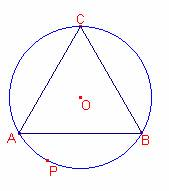

Problema 282
2) Si un
triangle equilàter està inscrit en una circumferència, la suma dels quadrats
dels segments que uneixen qualsevol punt de la circumferència als tres vèrtexs
del triangle és constant.
Brockway, G. E.
(1895): American Mathematical Monthly, (Volumen II, May) p. 158
Solució de Ricard Peiró i Estruch Profesor de Matemáti cas del IES 1 de Xest (València) (2 de diciembre de 2005) :

Siga el triangle
equilàter  , de circumcentre O.
, de circumcentre O.
Considerem el
triangle equilàter en les següents coordenades cartesianes:
, , , .
La circumferència de
centre O que passa per A (circumscrita al triangle  ) té per equació:
) té per equació:
.
Siga un punt de la
circumferència  , aleshores, .
, aleshores, .
Calculem les
components dels vectors, :